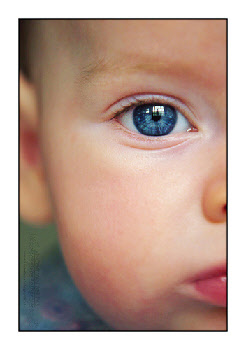

The Best Books for Baby Playtime
and Development
You can do a lot more with a baby than just feed, burp, and change. Simple games played with newborns only a few days old can have drastic changes on not only your bonding, but on the frantic neurons connecting inside that tiny cranium.

When it comes to baby activities,
I'm an unrepentant cheater.
If the thought of "baby activities" makes your mind go blank in a semi-panic, I'm here to affect a rescue.
No, Monopoly is not a good baby game.
But moving the arms and legs around while singing tunes?
Absa-tively, posi-lutely!
Personally, I have two things going against me when it comes with baby playtime.
First, I get bored easily. So doing the same activity every day for 9 months isn't going to work.
(And since these are my kids, it probably won't work for them either.)
Secondly, I can built a website, but when it comes to simple things, like coming up with simple games on my own, I look like an idiot.
So over the years, I've invested in numerous books to give me those ideas. So I don't look stupid in front of a drooling, pants-pooping, 3 month old. And it's worth it.
Here are some of my favorite go-to idea books for infant playtime. And, since we're talking about milestones and development, I've included a few books that discuss brain development as well.
Obviously, if I've missed one of your favorite activity and milestone books, please let me know about it.
Toys Can Be Brain Boosting Too!
Besides playing games with your baby, choose developmental toys that he can explore on his own; preferrably picking the award-winning toys that have been proven to cause brain-boosting stimluation.
I'll start with the fun activity books and then move over to the more intellectual developmental books.

Helpful Baby Activity Books
When I'm looking for details on something on the web, especially when it comes to books, I go straight to Amazon.
Even if I'm not going to buy something, I've found their reviews, peeks inside the cover, and other materials invaluable in my decision making.
So rather than discuss each one individually, I've added the top-rated baby game books in the widgits below. Clicking on each book will allow you to read parental reviews and see inside the books themselves.
This widget has TWO pages!! Click the arrow at the bottom to see the second page. I found a total 7 books worth mentioning (based on the parental reviews at Amazon).
Books About Milestones and Development
As a new parent, it's sobering to realize that your job is to train and teach that little mind. Do yourself a favor and learn now what you can expect later.
By knowing how your baby's brain is growing, and the phases he'll be shortly going through, you'll be able to be more patient with some of the more irrating things babies and kids do.
Trust me, in parenting, knowledge makes all the difference between a scream-fest and patient instruction.
Here are the books most parents turn to when they want to learn about their baby's growing mind and body.
Other Helpful Books
In case you haven't heard, reading is my favorite sport. I'm passionate about it. I'm dedicated to it.
And it keeps me up W-A-A-A-Y too late at night.
Check out some of these other book collections for other jewels of the reading world.
Making Baby Food from Home: So Easy, Even a CaveMom Can Do It
Yes, you read that correctly. You'll be stunned at just so easy making baby food at home really is. Let me share some of the best how-to manuals, and where to find tasty baby food recipes your baby won't be able to resist (yes, even those with veggies in them).
Merry Mother Picks: The Best Books for Fun Summer Reading
Every year I host a contest for my newsletter subscribers asking for their reading recommendations for the summer. The results are always exciting. I can't head to the library fast enough.
Rhythmic Boardbooks for Reading Time
Reading to your child at an early age is a major step in literacy later on. I've gathered the most beloved boardbooks and share them here. Some, I'm sure you've heard of. Some, I'm equally confident, you haven't.


 7 Ways to Determine an Ear Infection
7 Ways to Determine an Ear Infection
 5 Tips to Fight the Cold Crusties
5 Tips to Fight the Cold Crusties
 Free $32 Nursing Cover with code ONEFREE!
Free $32 Nursing Cover with code ONEFREE!

 Does a Belly Binder help C-Section Recovery?
Does a Belly Binder help C-Section Recovery?
 This Month's Coupon Codes for Gap, Children's Place, and Others
This Month's Coupon Codes for Gap, Children's Place, and Others

I just subscribed to the site, and I'm very happy I did. I have worked in the medical field for several years and love to have good resources for when things come up...
~ Crystal S.
What a great site and thanks for having it available!
~ Bernadette W.
I'm very excited to start receiving the newsletter. I've checked out your site a couple times and I loooovve how it's arranged, your language, and tips - it's great!
~ Emily N.
Heather, I can't express how happy I am I discovered your site!
~ Liza T.
Thank you Heather, for your wonderful newsletter. There is always something new!
~ Desiree T.
I'm a 1st time young mom, 23 and single, so I have found very very helpful...I can't seem to stop myself telling everyone I know about you, some thought you were my mom!
~ Vuyiswa N.
Your website is very helpful and I discovered a couple of great online stores. 'Cause I'm not a big reader, it is very nice that I can find the most important information through your
website.
~ Tonya G.
Thanks Heather! Your Milestone eBook is SO detailed and so correct. My son is doing all or most of the things and many are not mentioned in the usual books/sites. Great job and keep it up!
~ Anwesha C.
Thanks so much for creating such an AWESOME website. I really appreciate your sense of humor and real writing style.
~ Andrea Z.
My baby refused all bottles until you showed me the MAM bottle. Thank you so much for the recommendation. I wouldn't have known about them if not for your website.
~ Jennifer at Sweet Lilly Confections


Copyright © 2007-2011. All rights reserved.
Remember...when in doubt, give Doc a shout!